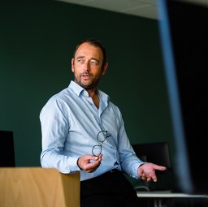
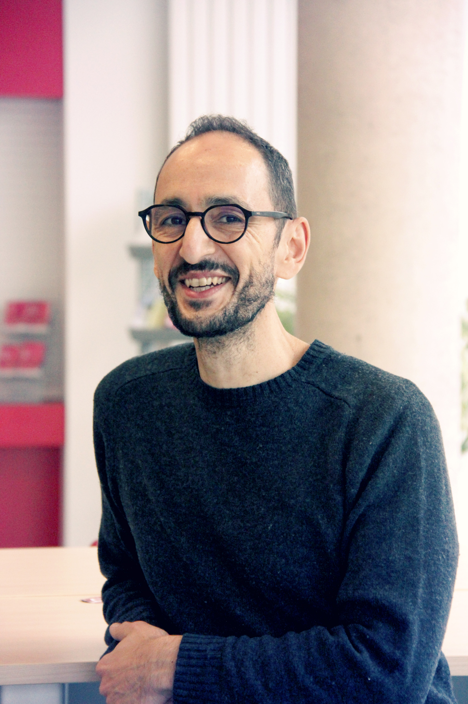

-
2021 | | | | | | | | 2025
Description
Recent technological advances are leading to a massive production of spatio-temporal data that can be modelled by a graph. This is crucial to analyse, however, these data are very often characterised by a volume and a complexity never previously seen. Despite the dynamism of data mining research, few unsupervised methods are usable for extracting both original and relevant information due to their runtime. It is therefore essential to design and develop innovative data mining approaches that are capable of processing these large volumes of data while taking into account the spatial and temporal aspects. The objective of the MoS-T project is to develop innovative methods to extract the most frequent approximate patterns in a spatiotemporal graph, by exploiting deep neural networks, in order to provide a synthetic visualisation of the spatiotemporal phenomenon being studied.Keywords
Spatio-temporal data, spatio-temporal graph, deep learning, frequent pattern mining, visualization, application to the medical and environmental fields
Consortium
-
groups Permanents
-
Aurélie LEBORGNE (Project Organization leader)
- work Associate professor in computer science University of Strasbourg - ICube research center
- description Aurélie works in the modeling and analysis of spatio-temporal data. More specifically, she modeled data from the medical field (functional MRI) and data from the environmental field (RPG, Corine Land Cover) using spatio-temporal graphs. She worked about a classic method of frequent pattern mining in such graphs in order to extract relevant information from these masses of data.
-

Antoine VACAVANT
- work Full professor in computer science at Université Clermont Auvergne / Institut Pascal
- description Antoine skilled in graph-based deep learning for image data analysis and processing. The applications of his research mainly concern computer-aided diagnosis based on (bio)medical image analysis and processing. Moreover, he is instructor at the NVIDIA Deep learning institute, thus officially accredited to deliver certifying workshops in Deep learning and HPC with CUDA.
-

Florence LE BER
- work HDR Dr Engineer in computer science at University of Strasbourg / ICube research center
- description Florence works in modeling and representing knowledge and reasoning about space, extracting knowledge from temporal and spatial data. Application to agriculture, hydroecology and more generally to environmental issues.
-
Thomas LAMPERT
- work Chair of Data Science and Artificial Intelligence at Télécom Physique Strasbourg / ICube research center
- description Thomas is a Computer Science researcher in the general field of Artificial Intelligence, and more specifically in Machine Learning and Image and Time-Series Analysis in various fields of application (most recently in medical imaging and remote sensing).
-
Céline MEILLIER
- work Associate professor in statistical signal and image processing at Télécom Physique Strasbourg / ICube research center
- description Céline works on the spatio-temporal modelling of the dynamics of functional connectivity through the analysis of signals from fMRI data. She also works on multiple thresholding techniques for significant correlations of fMRI signals recorded in different regions of the brain.
-

Antonio CAPOBIANCO
- workAssociate professor in computer science at University of Strasbourg / ICube research center
- descriptionAntonio is specialist in Human-Computer Interaction, Virtual Reality and 3D Interaction. He is interested in user issues, in particular for the visualization and processing of information.
-
-
groups Non-permanents